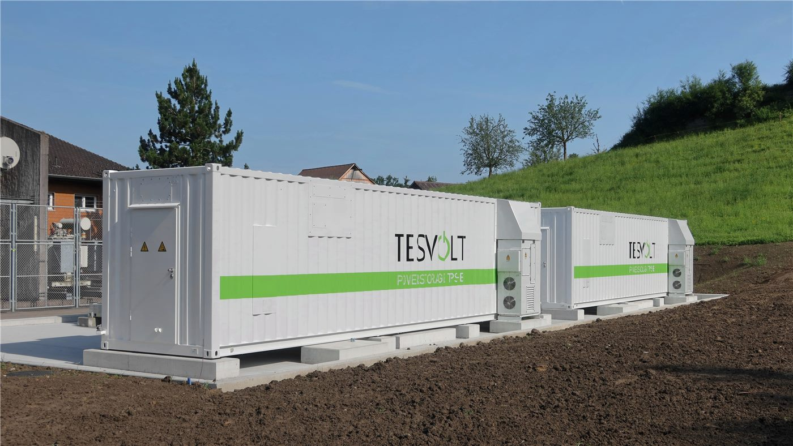

대만·미국, 충전기·배터리 '비(非)적색' 공급망 구축 추진
대만과 미국이 충전기와 배터리 분야에서 특정 국가 의존도를 낮춘 공급망을 함께 만드는 방안을 추진한다. 부품 조달 경로를 재편하려는 시도의 하나다.
주유민 기자 · 2026.09.13
橋대만

대만과 미국이 충전기와 배터리 분야에서 이른바 '비적색(non-red)' 공급망을 함께 구축하는 방안을 추진하고 있다. 특정 국가에 대한 부품 의존도를 낮추는 것이 목표다.
광고 문의 · 300×250충전기와 배터리는 전기차, 에너지 저장장치, 휴대기기 전반에 들어가는 기반 부품이다. 셀과 소재, 전력 반도체까지 포함하면 관련 업체가 여러 나라에 걸쳐 있다.
대만은 전력 관리 반도체와 부품 설계에 강점을 가지고 있고, 미국은 최종 수요 시장과 완성품 기업을 두고 있다. 양측은 인증 기준과 조달 요건을 맞추는 방식으로 협력을 진행할 것으로 알려졌다.
다만 공급망 재편에는 비용이 따른다. 소재와 셀 생산은 규모의 경제가 크게 작용하는 분야여서, 조달처를 바꾸면 단가 상승이 불가피한 경우가 많다.
대만 업계에서는 완성품 기업의 요구에 맞춰 생산 거점을 조정해 온 경험을 바탕으로, 동남아시아와 북미에 공정 일부를 배치하는 방식을 검토해 왔다.
협력의 실효성은 인증 절차의 정비 속도와 실제 발주 물량에 달려 있다. 선언 단계와 조달 단계 사이의 간극이 관건이라는 지적이 나온다.
출처·참고 (사실 확인용 — 본문은 직접 재작성)
· https://news.ltn.com.tw/
· https://news.ltn.com.tw/